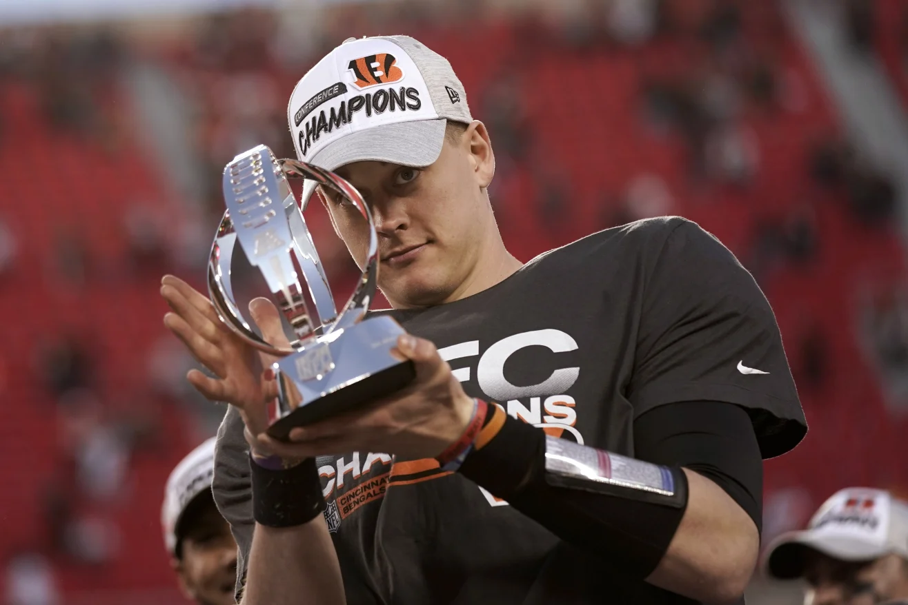

The Quarterback
Problem
We drafted thirty quarterbacks for twenty starting spots, and two teams are opening Week 1 with a wide receiver in the superflex.


Josh Allen: All-Pro Reels / CC BY-SA 2.0 · Lamar Jackson: Maryland GovPics / CC BY 2.0 · Jayden Daniels: tammy anthony baker / CC BY 2.0 · Jalen Hurts: All-Pro Reels / CC BY-SA 2.0 · Joe Burrow: All-Pro Reels / CC BY-SA 2.0 · Drake Maye: Tennessee Titans / CC BY 3.0
The format
Our scoring has an unusual rule
This is a superflex league, so everyone starts two quarterbacks every week. The scoring also has a wrinkle that matters more than it looks:
Here is the same afternoon run through the league's actual settings:
The penalty lands on the quarterback and nobody else. Receivers and backs are paid for moving the chains the same way runners are. The pocket passer threw for more yards and more touchdowns and still finished almost six points behind. Add in four-point passing touchdowns and the position splits into two tiers, and the quarterbacks who run are in the better one. We each have to start two of them.
One quarterback went in the first round.

Joe Burrow went seventeenth, which this publication considers the single largest error of the draft and will continue to consider so regardless of what happens over the next fourteen weeks.
The board
First QB selected, by team
Week 1 lineups
The two QB-eligible slots
LeBron Offensive Foul is the only team starting two quarterbacks who actually run, and he got both at picks 50 and 51. The defending champion ignored the position for three hours and still ended up with the best pair for this format.
Around the league
Everybody else
LeBron Offensive Foul
Defending championChristian McCaffrey, De'Von Achane and Derrick Henry to open, which is a lot of miles on a lot of tires. Then Jaxson Dart, Bo Nix and Kyler Murray late. evspade won the thing last year and has defended it by drafting three veteran running backs and the quarterbacks nobody else bothered to look at, and somehow it is the roster that fits our scoring best.
Fryder-Man: Brand New Day
Lamar at 19Bijan Robinson at 2, Lamar Jackson at 19 and Brock Bowers at 22 is the cleanest opening anyone had. The odd part is Week 1, where he is starting Rome Odunze in the superflex and sitting Baker Mayfield, who is an actual starting NFL quarterback. Brand new day, same old superflex.
Who Dey and the Blowfish
Only true SF buildJosh Allen at 4 and Joe Burrow at 17. This was the only team that treated superflex like superflex, and it cost real money, because while everyone else was taking Puka Nacua and CeeDee Lamb in the second round your commissioner was buying arms. If the format rewards elite quarterbacks the way it should, this wins the league. If it does not, it is a very expensive pair of Bengals.
Rancor Fajitas
Mahomes at 52Justin Herbert at 32 and Patrick Mahomes at 52 is good value, though our scoring puts a ceiling on what a pure passer can do for you. He also lost Matthew Stafford to Skinned Knee Varsity four picks before his turn and posted about it in the league chat while the draft was still going, which is the most relatable thing that happened all night.
Skinned Knee Varsity
Two QBs totalNine wide receivers and two quarterbacks, in a league that starts two quarterbacks. Stafford and Daniel Jones have to play every week with no margin for a bye or a bad hamstring. Willis's Willies has the opposite problem, so there is a trade sitting there, but everyone can see brunosilvadev needs it more, which is a rough way to start negotiating.
4th and 35
Daniels at 21Jahmyr Gibbs at 1.1 and Jayden Daniels at 21 is about as good as the top of a draft gets in this format, since Gibbs racks up first downs and Daniels runs for them. Jordan Love in the superflex is the soft spot. Better position than the team name suggests.
Bison Circle Buttercups
Puka Nacua and CeeDee Lamb to start, then Caleb Williams, Brock Purdy, Cam Ward and Aaron Rodgers. Williams is the right kind of quarterback for this league. The other three are depth that the waiver wire will probably beat by October.
Irrational Exuberance!
geauxjack let the computer draft for him and it came back with Ja'Marr Chase, Justin Jefferson and Trey McBride. Irrational exuberance is one way to describe how the rest of us feel about that. Dak Prescott and Trevor Lawrence are exactly the quarterback profile this format punishes, so the receivers will have to carry it, and they might.
Team OneManEra
Also on autopilot, and also fine. Amon-Ra St. Brown, Drake London and Jalen Hurts, who is the single best value pick of the draft for our scoring. The one man in the OneManEra appears to be the Sleeper autodraft algorithm, and he had a better night than most of us.
What actually decides this season
Three things worth knowing now
The median matchup is on
Every week you play your opponent and the league median, so there are two results a week. That takes a lot of the schedule luck out of it. You cannot sneak into the playoffs on an easy draw and you cannot get knocked out by scoring 140 against the one guy who scored 145. Since there are no ceiling bonuses anywhere in our scoring, the format rewards a high floor more than a big ceiling.
Chain-movers are underpriced
With half PPR and half-point first downs, a nine-catch 95-yard day scores 16.5 and a three-catch 95-yard touchdown scores 18.0. Those are much closer than they would be anywhere else. Every ranking you read is built for standard PPR, so slot receivers and high-target tight ends will be cheap all year.
Defense is a pass-rush stat
Sacks are worth two points, double the usual, and there is no penalty for yards allowed at all. Stream defenses against bad offensive lines rather than bad offenses. It is not the same list.


.jpg){kind=link}
{kind=link}
{kind=link}
.jpg){kind=link}
.jpg){kind=link}
{kind=link}